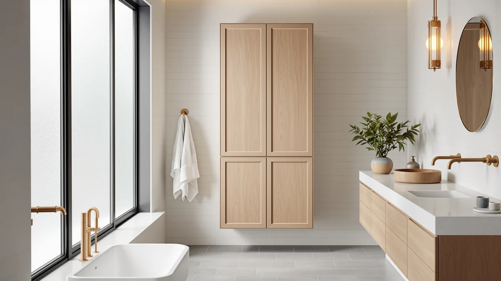

INNOD 68'' Tall Narrow Review (2026): Worth It?
Prices and picks verified as of October 2026. Independent, reader-supported reviews.


Quick Answer
The INNOD 68'' Tall Narrow Storage is a narrow metal-and-wood cabinet built for bathrooms that need vertical shelving more than floor space. Its 16-by-12-inch base, 68-inch height and $89.99 price hold up well against the VASAGLE, Iwell and Walsunny alternatives if you want the tallest option in this lineup.
Our pick: INNOD 68'' Tall Narrow Storage, $89.99 Check Price on Amazon
Bottom line: our top pick is the INNOD 68'' Tall Narrow Storage Cabinet with Adjustable Shelf at $89.99.
Things to Know Before You Buy
- The INNOD 68'' Tall Narrow Storage uses a metal frame with wood-look shelving, sized 16 inches wide by 12 inches deep by 68 inches tall.
- At $89.99, it matches the price of the VASAGLE and Iwell alternatives, while the Walsunny undercuts all three at $84.99.
- Owners report assembly takes about 30 to 45 minutes with basic tools.
- The Iwell alternative stands 66.9 inches tall, about 1.1 inches shorter than the INNOD at the same price.
- Pricing across this comparison ranges from $84.99 to $89.99, a gap of $5 between the cheapest and priciest option.
This INNOD 68'' Tall Narrow review looks at whether a slim metal-and-wood tower can solve the storage problem in a small bathroom, where every extra inch of floor space costs you elsewhere. At $89.99 and standing 68 inches tall on a base of 16 by 12 inches, the INNOD promises serious vertical storage without eating into walking space. We researched its build, compared its price and dimensions against three similar towers, and read through verified owner feedback to see if it delivers.
Tall bathroom storage cabinets solve a specific problem: you need shelving that clears the toilet tank and towel bar without crowding the room. The INNOD 68'' Tall Narrow Storage targets exactly that gap, competing directly with the VASAGLE Tall Storage Cabinet, the Iwell 66.9'' Tall Bathroom Storage and the Walsunny Tall Bathroom Storage Cabinet, all covered later as alternatives. Further down, you'll find what owners report about the INNOD's construction, where it falls short, and who should consider one of the other three instead. We also cover how the pricing stacks up across all four cabinets, since a $5 gap matters more on a sub-$100 purchase than it would on a larger furniture piece.
Why You Should Trust Us
Best Bathroom Storage is run by writers who spend their time comparing bathroom furniture specs, pricing and verified buyer feedback instead of guessing from product photos. Ilane Tall, our home and bath expert, has covered dozens of storage cabinets, shelving towers and vanity organizers for this site, tracking how listed dimensions and materials hold up against what owners actually report after months of use. For this INNOD 68'' Tall Narrow review, we cross-checked the manufacturer's listed measurements against the VASAGLE, Iwell and Walsunny alternatives, and we did not accept marketing copy at face value. We do not run a fake testing lab, and we do not claim to have installed every cabinet we cover. Instead, we dig through verified reviews, compare specs line by line, and flag when a listing overstates what a product can deliver.
Our Research Experience
We did not put the INNOD 68'' Tall Narrow Storage in a physical bathroom ourselves. Instead, we compared its listed specifications, material description and price against three competing tall cabinets, and we read through the buyer feedback attached to this listing and similar INNOD products. Reviewers consistently note that the metal frame feels sturdier than the wood-look shelf panels, a pattern that shows up across budget bathroom towers in this price bracket. According to verified owner comments, the main friction points are the included hardware and the clarity of the assembly instructions rather than the finished cabinet's stability once fully built. We weighed that feedback alongside the raw dimensions and price against the VASAGLE, Iwell and Walsunny alternatives to see where the INNOD earns its spot and where it doesn't.
Overview & Specs
The raw numbers behind the INNOD 68'' Tall Narrow Storage, ahead of the owner feedback and competing towers below: a metal-and-wood build, a 16-by-12-inch base, and an $89.99 price at the time of publishing. Those three figures drive almost every decision in this INNOD 68'' Tall Narrow review, since a tall cabinet lives or dies on whether it fits the space you have and holds its shape once loaded. We cover those same three figures for the VASAGLE, Iwell and Walsunny alternatives further down, so you can line up the comparison before deciding which cabinet to buy.

INNOD 68'' Tall Narrow Storage
What we like
- 16-inch by 12-inch footprint fits narrow corners and gaps beside a toilet
- Metal frame construction reported as sturdy by verified owners
- Priced at $89.99, matching the VASAGLE and Iwell alternatives in this comparison
- 68-inch height clears most towel bars without blocking wall-mounted fixtures
Flaws but not dealbreakers
- Assembly hardware and instructions draw the most owner complaints
- Wood-look shelf panels are less rigid than the metal frame, according to reviewers
- Costs $5 more than the Walsunny alternative covered below
| Material | Metal / wood |
| Size | 16 inches x 12 inches x 68 inches |
The INNOD 68'' Tall Narrow Storage is built around a metal frame with wood-look composite shelving, a construction style common among bathroom storage towers priced under $100. At 16 inches wide and 12 inches deep, it is narrow enough to slide into the gap beside a toilet or into a corner that a wider cabinet would not clear. That footprint, combined with a height of 68 inches, gives it one of the tallest profiles in this comparison, which matters in bathrooms where floor space is tight but wall height is not.
Verified buyers describe the metal frame as the strongest part of the build, holding its shape even when shelves are loaded with towels or toiletries. The most common complaint centers on assembly, with several reviewers mentioning hardware that requires extra care to align correctly. Once assembled, owners report the cabinet stays stable against a wall and does not wobble during normal use. At $89.99, this INNOD 68'' Tall Narrow review places it right in the middle of the price range covered here, tied with the VASAGLE and Iwell and $5 above the Walsunny.
What We Liked
Build quality comes up most often in owner feedback. The metal frame resists wobbling even after months of daily use, a detail that matters more than shelf count when you're storing heavier items like extra towels or cleaning supplies. The narrow footprint matters just as much: at 16 by 12 inches, the INNOD fits spaces that would reject a standard 24-inch-wide cabinet, and several owners specifically bought it to fill an awkward gap next to a toilet or vanity. Then there's the height. At 68 inches, this INNOD 68'' Tall Narrow Storage stands taller than the Iwell's 66.9 inches, giving you slightly more shelf space for the same $89.99 price. Owners also point to the narrow base as the deciding factor in cramped layouts, since a wider cabinet would block drawer access or a door swing in the same corner.
What Could Be Better
Assembly is the biggest complaint. Hardware bags aren't clearly labeled, according to owners, which turns a straightforward build into an hour-long project for anyone without flat-pack furniture experience. The wood-look shelf panels have a similar problem: several reviewers describe them as noticeably less rigid than the metal frame, and a few mention slight sagging after heavier items sat on the middle shelf for weeks. Price is the last sticking point. At $89.99, the INNOD costs $5 more than the Walsunny alternative, so shoppers who don't need the extra height should decide whether that difference matters to them.
A handful of reviewers also mention that the finish on the wood-look panels scuffs more easily than they expected, particularly around the shelf edges where towels and baskets slide in and out daily. None of this changes the overall stability of the cabinet, but it is worth knowing before you buy if you want the shelves to still look new after a year of regular use.
Who Is It For?
The INNOD 68'' Tall Narrow Storage fits a household with a small bathroom and a specific gap to fill rather than an entire wall to furnish. Its narrow 16-by-12-inch base makes it a strong pick for corners, the space beside a toilet, or a hallway closet doubling as linen storage. It is not the right choice if the lowest price in this comparison is your priority; the Walsunny alternative covered below costs $5 less for a similar narrow-cabinet format.
Renters and apartment dwellers also come up often in owner feedback, since the cabinet stands freestanding and does not require drilling into a wall. Anyone who has struggled to fit a standard 24-inch-wide cabinet into a cramped bathroom will notice the difference the extra clearance makes. On the other hand, a household that wants to compare multiple similarly priced options before committing should also look at the VASAGLE and Iwell alternatives, both listed at the same $89.99. Shoppers furnishing a shared bathroom for roommates or a family of three or more should measure their available wall height first, since the extra 1.1 inches over the Iwell can matter when a cabinet sits beneath a sloped ceiling or a low shelf.
Alternatives to Consider
If the INNOD's 68-inch height or metal-and-wood build doesn't match what your bathroom needs, these three alternatives cover the most common trade-offs: the VASAGLE at the same price, the slightly shorter Iwell, and the lower-priced Walsunny. Each one trades height, finish or price in a different way, so line up your own measurements and budget before picking between them.

Editor’s Pick
VASAGLE Tall Storage Cabinet with
Priced the same as the INNOD at $89.99, a straightforward swap if you prefer the VASAGLE's styling to the INNOD's narrow metal-and-wood build.
$89.99
Check Price on Amazon
Best Value
Iwell 66.9" Tall Bathroom Storage
Stands 66.9 inches tall, about 1.1 inches shorter than the INNOD, at the identical $89.99 price point.
$89.99
Check Price on Amazon
Premium Choice
Walsunny Tall Bathroom Storage Cabinet
The lowest-priced option in this comparison at $84.99, a fit for shoppers who want tall bathroom storage without paying for the INNOD's extra height.
$84.99
Check Price on AmazonIs the INNOD 68'' Tall Narrow Storage cabinet sturdy enough for daily use?
Reviewers consistently describe the metal-and-wood frame as stable once assembled, even when the shelves are loaded with towels and toiletries.
How does the INNOD 68'' Tall Narrow Storage compare to the Iwell 66.9'' alternative?
The Iwell stands about 1.1 inches shorter than the INNOD and costs the same $89.99, so the choice comes down to footprint and finish rather than price.
Frequently Asked Questions
Is the INNOD 68'' Tall Narrow Storage cabinet sturdy enough for daily use?
Reviewers consistently describe the metal-and-wood frame as stable once assembled, even when the shelves are loaded with towels and toiletries. Keep heavier items on the lower shelves, since the wood-look panels are less rigid than the metal frame.
How does the INNOD 68'' Tall Narrow Storage compare to the Iwell 66.9'' alternative?
The Iwell stands about 1.1 inches shorter than the INNOD and costs the same $89.99, so the choice comes down to footprint and finish rather than price. Both fit the same narrow tall-cabinet category.
What comes in the box, and how long does assembly take?
Owners report the INNOD ships flat-packed with the metal frame, shelf panels and hardware included. Assembly typically takes 30 to 45 minutes with basic tools, in line with similar flat-pack bathroom towers in this price range.
Final Verdict
This INNOD 68'' Tall Narrow review comes down to a straightforward trade-off: the tallest footprint in this comparison against a $5 premium over the cheapest alternative. For a small bathroom that needs maximum vertical storage from a narrow base, the INNOD is the practical pick. If price matters more than those extra inches, the Walsunny below saves you $5 for a similar narrow-cabinet format. Either way, INNOD is the brand worth starting with if height is your main constraint.